Redesigning Allego for
web, tablet and phone
Allego’s interface hadn’t changed since 2010, and the clutter was costing it business. We tested three redesign proposals with 15 people, and I led the final design that merged the best of them, across web, tablet and phone.
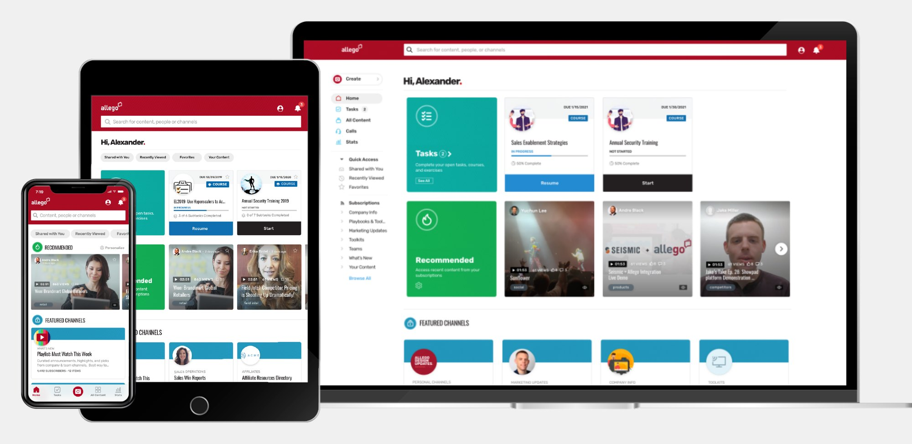
Ten years of clutter
Allego is a sales enablement platform on the web, iOS and Android. Its interface hadn’t been updated since 2010 and had grown more cluttered every year. Clients found it hard to use, and the company had lost business because of it.
Too much on every page
Content and visual noise competed for attention on every screen.
Hard to find anything
People needed an easy way to find any piece of content.
Navigation that didn’t lead
The navigation had to become clear and effective.
The business wanted to market Allego as a content management platform, grow sales, keep current customers and attract bigger companies. The design had to look modern, fix the navigation and hierarchy, and still feel familiar to the people already using it.
Part of a small design team
I was a UX/UI designer on the design team, working with another designer, the VP of product, a product manager, the customer success team and engineers. Over three months, the work went from proposals to a clickable prototype, Zeplin specs and design documents.
The new design had to fit how people already worked, run on every device Allego supports, serve very different users and their accessibility needs, organize millions of pieces of content, and rebuild a dashboard full of widgets, all while new features were still being built.
Three directions, one week each
A redesign this big deserved more than one direction. Each designer had a week to propose a home page, category page, content page and dashboard for web and mobile, working from research the team already had: a competitive analysis, user journeys, personas, interviews and a customer satisfaction survey.
My proposal put a personal greeting and picked items on the home page, with clearer navigation and bigger tiles. Content pages got a clear navigation tree, recommended shared items and a cleaner list.
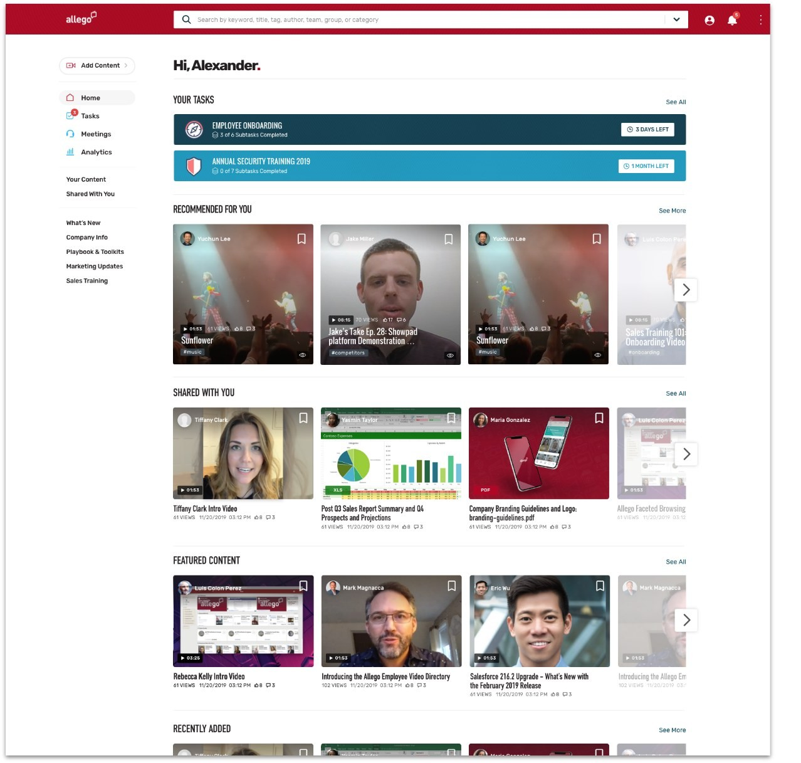
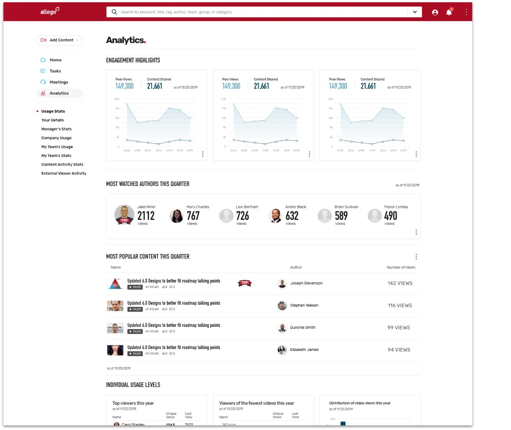
For the dashboard, I proposed charts that are easy to read and a clear overview of what each team has accomplished.
Testing, then merging
We tested all three proposals with 15 people: 5 product managers, 5 salespeople and 5 members of the customer success team. I wrote a survey that scored each design from 1 to 5. Mine scored 4.2, and the other two scored 4.5 and 3.9.
The final design merged the strongest parts of all three, and I led it.
Less clutter, clearer paths
The final design took the clutter out of every page and added hierarchy, and navigation moved to a side menu that’s easy to use.
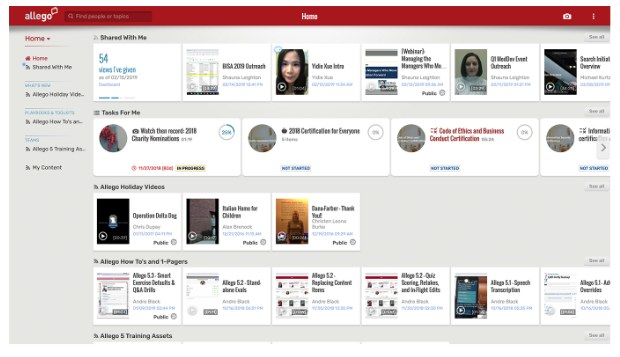
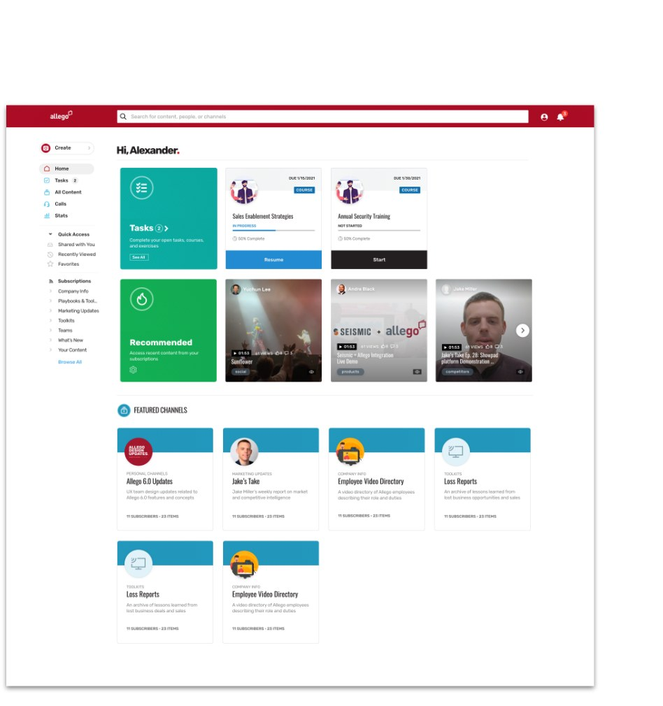
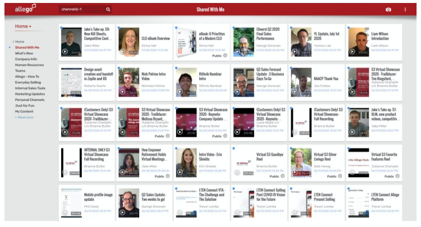
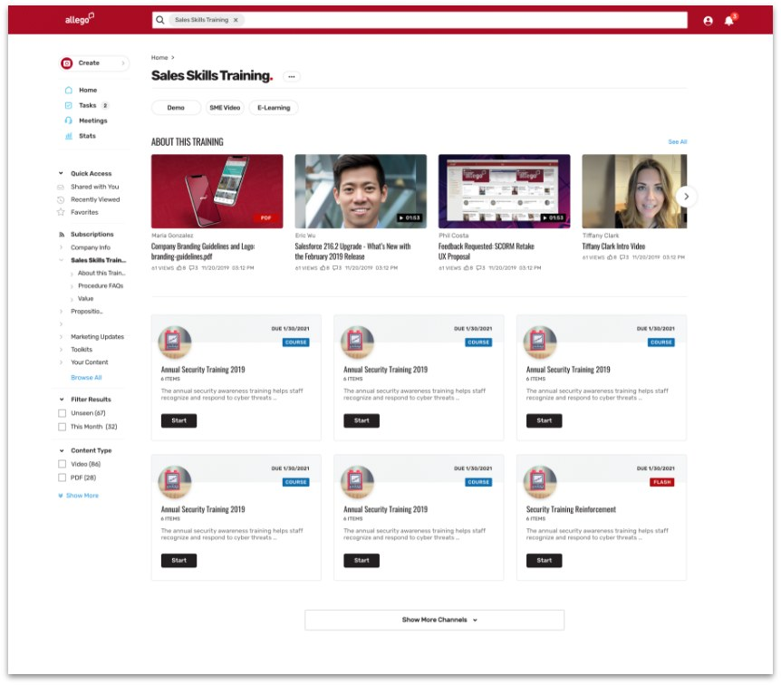
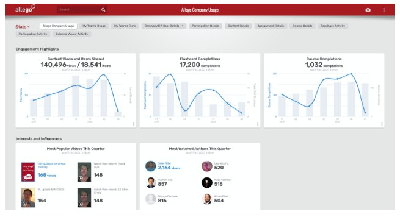
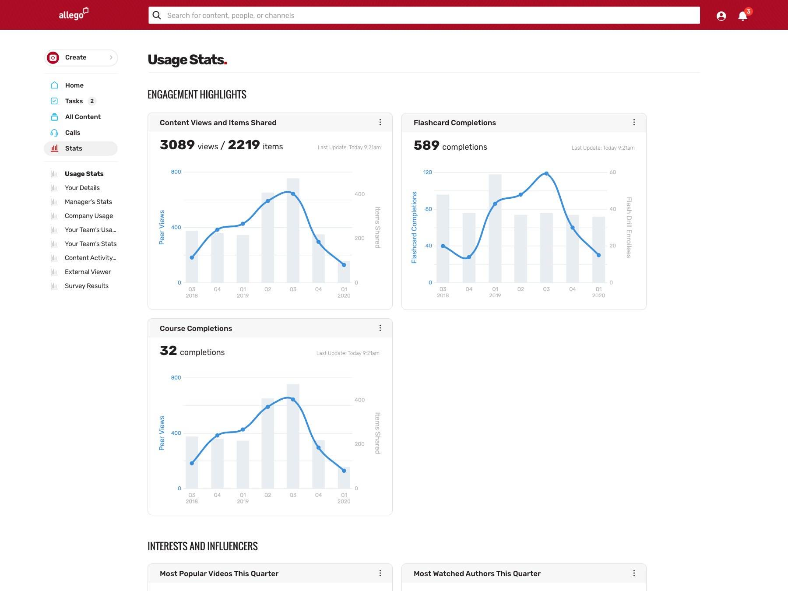
The same platform on every screen
Allego runs on the web, iOS and Android, so the new design carried over to tablets and phones: the same tiles, channels and content, laid out for touch.
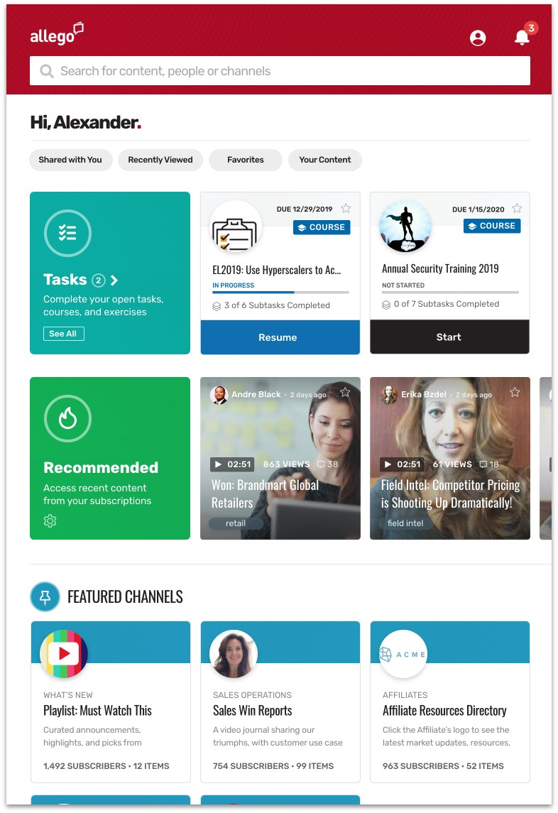
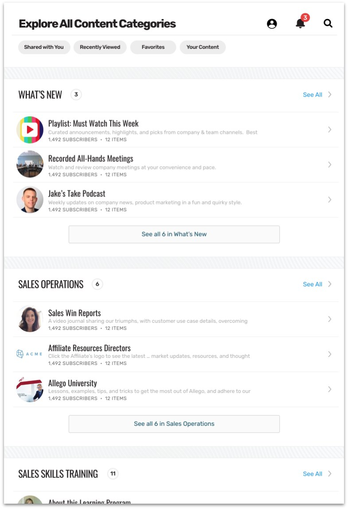
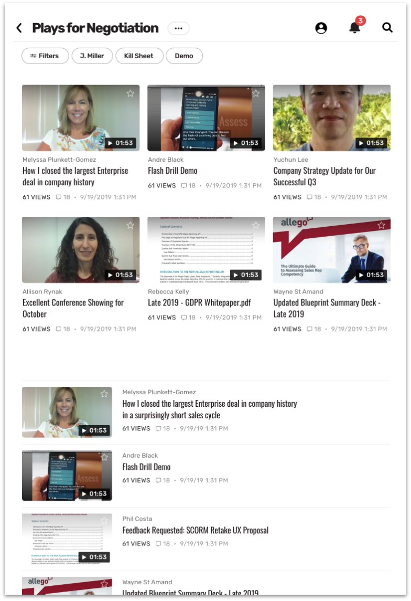
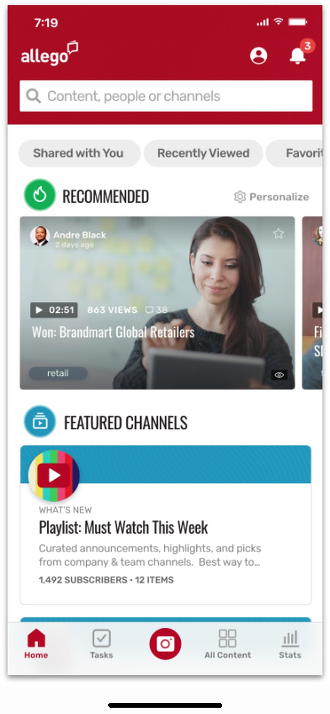
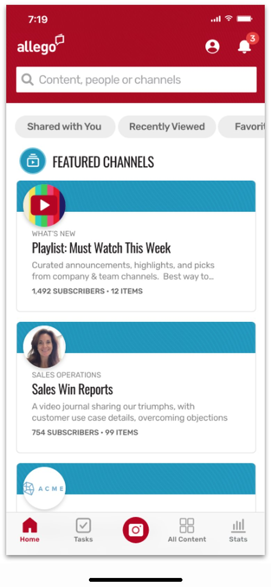
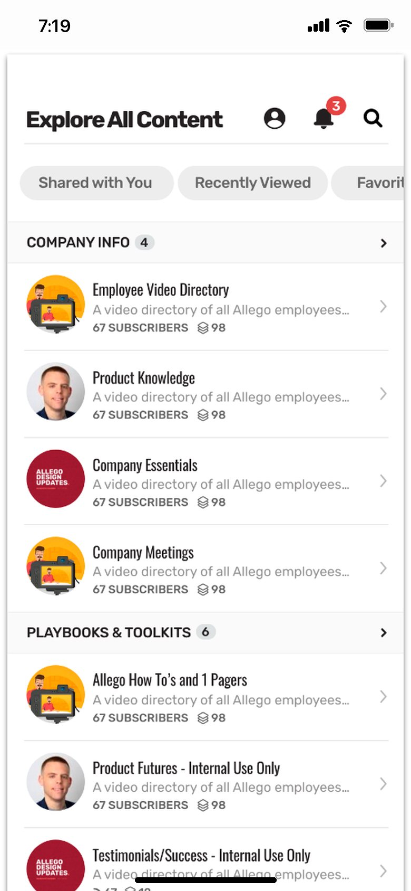
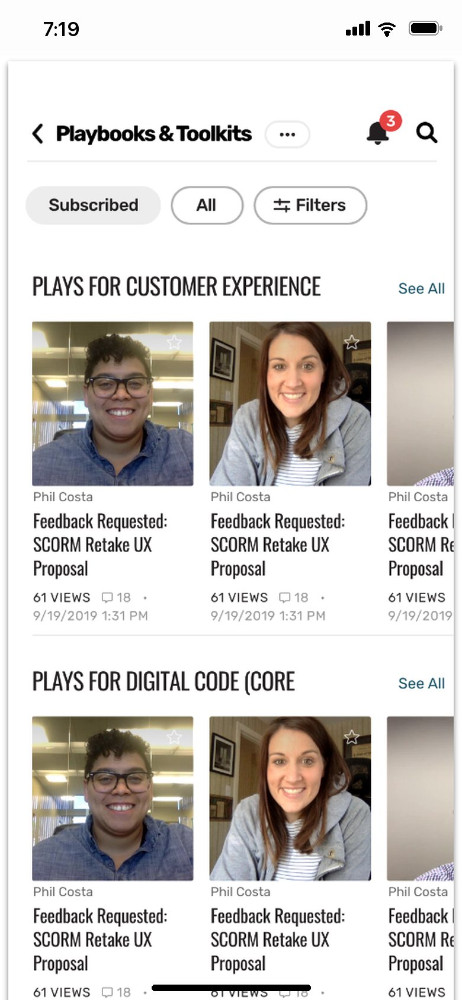
Launched in July 2020
The redesign launched in July 2020. Clients gave very positive feedback, and they especially liked the clean, modern look.